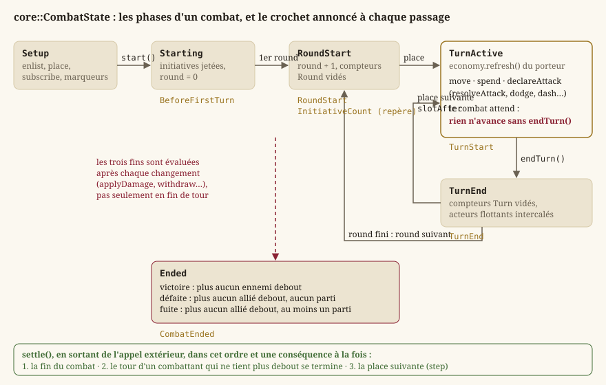
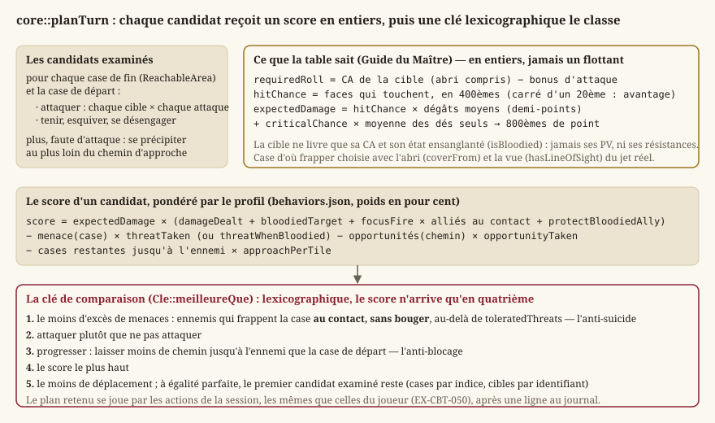
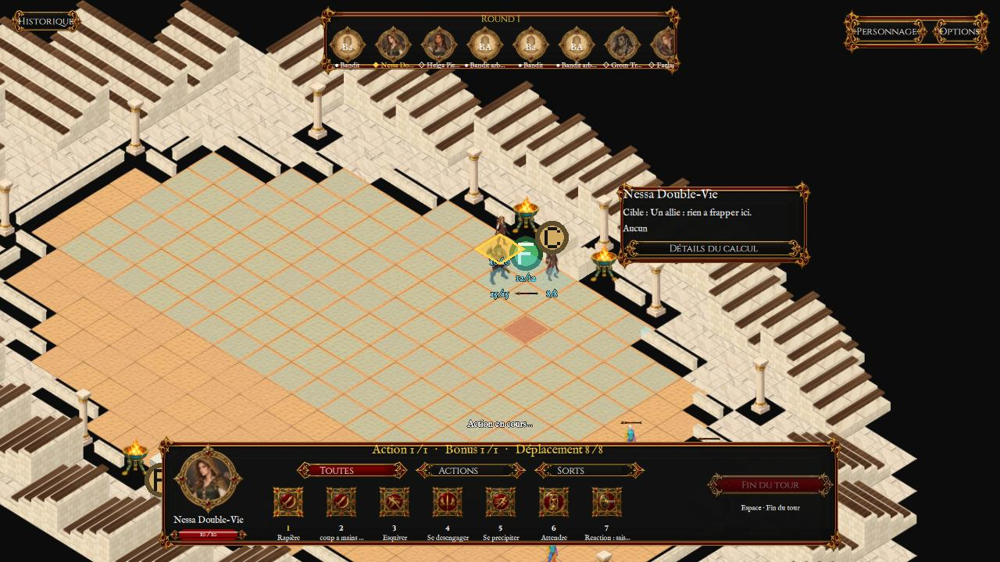

Combat tactique
Le combat est la moitié « au tour par tour » du jeu : le temps s'arrête, chacun joue à son rang, et l'espace se mesure en mètres. Tout ce qui le décide vit dans Source/JustAnotherRpgGame/Core/Combat/ — vingt en-têtes de Core pur, sans moteur ni GPU (EX-NFR-010), que cette page parcourt dans l'ordre d'un combat : le montage d'une rencontre, l'espace, l'initiative, le tour et son économie, le déplacement, l'attaque et les dégâts, la géométrie (portée, ligne de vue, abri, zones, tenaille), la prévisualisation, l'IA, puis la session d'arène qui tient un combat — lequel se joue sur la carte d'exploration elle-même depuis le LOT-118. Ce que l'écran en montre est renvoyé à Rendu 2D et Écrans ; les règles du d20 lui-même, à Règles d20.
Définitions
Un combat tactique au tour par tour
Dans un jeu de rôle « à la d20 », un combat n'est pas une simulation continue mais une suite de rounds : pendant un round, chaque combattant joue un tour, dans un ordre fixé au début du combat par un jet d'initiative. Un tour offre une économie d'actions — une action, une action bonus, une réaction et un déplacement (EX-CBT-011) — et se termine quand celui qui joue le décide (EX-CBT-012). Le combat prend fin quand l'un des deux camps n'a plus personne debout, ou que le camp du joueur a rompu le contact.
L'espace se mesure en mètres (LOT-1017) : le combat se joue au même endroit que l'exploration, seul le temps change (EX-CBT-001), et ce que la carte oppose au pas et au regard est l'affaire d'un espace de combat (core::CombatSpace) que le moteur implémente et que les tests simulent. Une créature y est un cylindre posé au sol, dont le rayon et la hauteur se tirent de son emprise du Manuel ; les données, elles, restent écrites en cases de 1,5 m (EX-REG-051) et se convertissent par core::metersFromTiles. Un déplacement se paie en cases entamées, sur un chemin qui contourne les murs (EX-CBT-020) ; une attaque suppose d'être à portée, mesurée entre les bords des volumes, et d'avoir une ligne de vue (EX-CBT-021, EX-CBT-022). C'est le programme d'EX-VIS-004, et la spécification du combat en détaille chaque terme.
Ce que le dossier contient
| En-tête | Ce qu'il porte | Lot |
|---|---|---|
Encounter.h, CombatTransition.h | la rencontre (qui, en quelle formation) et l'aller-retour exploration ↔ combat | LOT-18 |
TacticalTerrain.h | le verdict de l'éditeur : la rencontre tient-elle sur le terrain ? | LOT-11, LOT-EDITOR-07 |
CombatTypes.h, CombatSpace.h, SimulatedSpace.h | les types partagés, l'espace de combat en mètres (volumes, allonge, zones, abri, tenaille, hauteur ; chemin et places candidates, l'interface que le moteur implémente) et sa simulation pour les tests | LOT-1017 |
TurnOrder.h, ActionEconomy.h, CombatCounters.h, CombatState.h | l'initiative, les ressources du tour, les mémoires à portée, la machine à états, le déplacement | LOT-20, LOT-1017 |
Attack.h, Damage.h | le jet d'attaque amendable, la portée, la vue et l'abri entre deux combattants, et le pipeline de dégâts | LOT-21, LOT-1017 |
AreaOfEffect.h | les combattants qu'une zone d'effet prend | LOT-22, LOT-1017 |
EnemyAi.h, Flanking.h | l'IA tactique et la prise en tenaille | LOT-23 |
CombatPreview.h | ce que l'écran montre avant que le joueur ne s'engage | LOT-24 |
Arena.h | la session d'arène, rejouable | LOT-50 |
Chaque en-tête cite la page du Manuel des Joueurs ou du Guide du Maître qui fonde ses règles, et nomme ce qu'il décide au-delà du livre : cette page reprend ces décisions, sans recopier les fiches de lots qui les ont tranchées.
Le montage : de la rencontre à l'espace
La rencontre : qui, et en quelle formation (Encounter.h)
Une core::Encounter dit qui se dresse et comment (combatants, une liste de core::EncounterCombatant), jamais où : chaque combattant porte un identifiant de créature du bestiaire (LOT-33) et un décalage en cases par rapport au déclencheur (columnOffset, rowOffset). Une rencontre écrite une fois se joue donc partout où un déclencheur la pose, en gardant sa formation ; des coordonnées absolues auraient fait apparaître les mêmes gobelins au même endroit de toute carte, ou hors de la carte. Le drapeau escapable — vrai par défaut — est une décision de contenu : un combat de scénario dont on ne fuit pas s'écrit dans la donnée, et l'inverse enfermerait le joueur dans toute rencontre qu'un auteur aurait oublié de renseigner.
core::loadEncounters(dossier)lit un fichier JSON par rencontre (Rpg/encounters/), triés par nom, et rend uncore::EncounterCatalog: les rencontres lues, et les erreurs nommées. Une rencontre sans combattant est refusée : elle se déclencherait et se terminerait aussitôt par une victoire, en posant son drapeau — l'ennemi disparaîtrait sans combat et rien ne le dirait.core::EncounterCatalog::find(id)rend la rencontre, ounullptr.core::placeCombatants(rencontre, déclencheur)est pure : elle rend la liste des cases voulues (core::CombatantPlacement) sans consulter ni carte ni collision. C'est au montage de refuser celles qui tombent dans un mur, et il ne peut le faire que s'il les reçoit toutes.
L'aller-retour exploration ↔ combat (CombatTransition.h)
EX-CBT-001 veut un passage explicite et réversible, et le LOT-18 l'a voulu pur : rien de ce qui décide n'est dans un widget, ce qui rend l'aller-retour vérifiable sans fenêtre.
core::ExplorationSnapshotest ce qu'on met de côté : la position du personnage, son orientation (EX-EXP-004) et la caméra. Il ne porte pas les points de vie — ils sont précisément ce que le combat a changé, et les restituer annulerait le combat — ni les ennemis vaincus, qui ne se restituent pas mais s'acquièrent.capturedreste faux tant que rien n'a été relevé : restituer un instantané vide téléporterait le personnage à l'origine de la carte.core::CombatOutcomenomme les trois issues :Victory,Flight,Defeat.core::EncounterRunest la rencontre engagée : l'instantané, l'identifiant, les placements calculés,escapablerecopié, etdefeatFlagKey— la clé de drapeau de monde qu'une victoire posera, vide pour une zone de rencontre qui doit pouvoir se reproduire.core::beginEncounter(rencontre, instantané, déclencheur, clé)construit ceEncounterRun;core::endEncounter(run, issue, drapeaux)rend l'instantané à restituer et, seulement en cas de victoire, pose le drapeau. Une fuite ou une défaite ne marquent rien : sinon fuir suffirait à nettoyer une carte, et le défaut ne se verrait pas — une carte qui se vide ressemble à une progression.core::encounterAlreadyCleared(drapeaux, clé)répond non pour une clé vide : l'inverse désactiverait toutes les zones de rencontre du jeu dès le premier combat gagné.core::encounterTriggerFor(entité, carte)lit une entitéencounterde la carte comme uncore::EncounterTrigger. Deux natures, distinguées par la donnée et non par le type : un ennemi posé reçoit une clé fabriquée parcore::keyForEntity(jamais écrite à la main, sinon deux ennemis finiraient par la partager) ; une zone (respawns: true) n'en a pas. Un déclencheur qui ne nomme aucune rencontre n'en est pas un.
Côté exploration, core::ExplorationSession produit un ExplorationEventKind::Encounter quand le héros interagit avec un tel déclencheur (Monde et exploration) ; c'est l'appelant qui monte alors le combat. Le mode hmi::CombatMode du LOT-18, qui gelait les passes de l'ancienne exploration, n'existe plus (LOT-88, LOT-102) : dans le jeu Qt Quick, c'est hmi::EncounterModel qui monte la rencontre sur la carte courante quand la session émet l'événement, et le combat se joue là, sur la carte (LOT-118, livré pour la démo).
Le terrain est-il jouable ? (TacticalTerrain.h)
Comme le combat se joue sur la carte d'exploration, une rencontre posée dans un couloir d'une case ne se découvrirait qu'en jeu. core::analyzeEncounterTerrain(collision, entités, catalogue, bestiaire) le dit à l'auteur au moment où il pose : pour chaque entité encounter dont la rencontre est connue, un core::EncounterTerrain — les placements voulus, la zone atteignable autour du déclencheur, le nombre de cases exigé, et les problèmes (core::TacticalIssue, des codes core::TacticalIssueCode et jamais du texte, EX-NFR-011). La carte est encore en cases (jusqu'à la description de carte du LOT-1018), et le verdict aussi ; il se calcule pourtant sur l'espace du combat : l'espace simulé de la grille de collision (core::SimulatedSpace::fromTileMap), où chaque combattant est posé au centre de son emprise (core::tileCenter), dans l'ordre de la formation, avec la règle du montage — tenir dans l'espace, ne recouvrir personne (core::CombatState::placementAt) : un avertissement de l'éditeur et un refus au montage ne peuvent pas diverger. La zone atteignable est l'ensemble des cases dont le centre est une place candidate de cet espace (core::CombatSpace::candidates) pour un marcheur de taille M parti du centre du déclencheur, dans un budget de TACTICAL_AREA_RADIUS cases converti en mètres ; le chemin se mesure en mètres, sans seconde implémentation. Trois constantes sont des décisions nommées, réglables : TACTICAL_PARTY_SIZE (4, le groupe pour lequel le Guide calibre ses rencontres), TACTICAL_AREA_RADIUS (6 cases, les 9 m qu'un combattant de taille M parcourt en un tour) et TACTICAL_CELLS_PER_COMBATANT (4 : se tenir, et manœuvrer). L'éditeur l'appelle dans son contrôle du contenu (LOT-EDITOR-07, Éditeur de niveaux). core::analyzePartyDeployment (PartyDeployment.h, LOT-143) juge de même, sur le même espace simulé, la rencontre et le groupe de quatre sur leur zone de combat, et rend ses places en cases de la carte.
L'espace (CombatTypes.h, CombatSpace.h, SimulatedSpace.h)
Le Manuel compte en mètres ; la grille du LOT-19 n'était qu'une façon de les dessiner, et elle a imposé des demi-cases, un départage de chemins et un abri non additionné. Depuis le LOT-1017 (D-50), une créature est un cylindre, une portée une distance entre deux bords, une zone une forme, et la carte est ce que l'espace en dit. La projection isométrique de l'ancien moteur est retirée avec la grille : la caméra est libre (D-49), et le moteur projette.
Les types partagés (CombatTypes.h) ne déclarent rien qui porte le nom d'une macro du moteur : ils se consomment depuis le module du jeu.
core::CombatantIdest un type fort, pas unint: l'espace ne sait rien de ce qu'est un combattant, il ne retient que sa place ; c'estcore::CombatStatequi attribue les identifiants.core::footprintSide(taille)traduit la table des tailles du Manuel : 1 case jusqu'à M, 2 × 2 pour G, 3 × 3 pour TG, 4 × 4 pour Gig. Une très petite créature occupe une case entière là où le livre en tolère quatre : décision duLOT-19, gardée en distance.core::Locomotion(Walk,Fly) : le vol est une manière de traverser le même espace. Un volant franchit les obstacles au sol (eau profonde, falaise) et ignore le terrain difficile, mais pas la matière pleine, et tient sa place comme tout autre ; il n'a pas d'altitude propre — sa base se pose au sol de l'espace, comme celle d'un marcheur.core::Cover: les trois abris du Manuel et l'absence d'abri, ordonnés du moins au plus protecteur, parce que « seul celui qui protège le plus est pris en compte » et que comparer deux abris est ce que cette règle demande ;core::coverBonus(0, +2, +5, et 0 pour le total, qui n'est pas un bonus mais une cible qu'on ne vise pas) etcore::coverLabel(« abri partiel »…).core::PlacementResult:Placed,OutOfBounds(hors de l'espace, ou plus de point d'entrée),Obstructed(le volume touche la carte),Occupied(il recouvre un autre combattant),InvalidCombatant.core::AreaShape: les cinq formes de zone du Manuel.
La géométrie (CombatSpace.h) se passe de la carte, et se teste exactement, sans moteur.
core::Meters3: un point en mètres,xetyau sol,zla hauteur ;groundDistanceignore la hauteur,distancela compte.core::Volume: le centre de la base, un rayon, une hauteur.core::volumeOf(base, taille)les tire de l'emprise — le rayon est la moitié de son côté, la hauteur son côté, parce que le Manuel donne à une créature un espace cubique : 0,75 m et 1,50 m pour M, 1,50 m et 3 m pour G (creatureRadius,creatureHeight).core::centerOf(volume)est le centre à mi-hauteur : d'où l'on regarde, et ce que l'on vise.core::edgeDistance(a, b): l'écart entre les bords de deux volumes, en trois dimensions, 0 s'ils se touchent ;core::inReach(a, b, allonge)le compare à l'allonge (1,50 m par défaut,MELEE_REACH_METERS) ;core::overlap(a, b)dit que deux volumes ne peuvent pas se tenir là tous les deux.core::tileCenter(ancre, taille): le centre, au sol, de l'emprise dont la case haut-gauche estancre— là où une carte en tuiles pose une créature ;core::tileOf(point)rend la case qui contient un point. Les cartes, leurs entités, les placements de rencontre et les points d'entrée restent en cases jusqu'à la description de carte duLOT-1018; le combat, lui, ne connaît que des mètres, et ces deux fonctions sont la seule couture.
L'interface core::CombatSpace porte ce qui dépend de la carte : groundHeight(x, y) (la hauteur du sol, où une base se pose), isClear(volume, locomotion) (le volume tient-il sans toucher mur, bord ou, au sol, eau profonde), lineOfSight(de, à) (rien de la carte n'arrête le segment), route(requête) (le meilleur chemin dans le budget, ou rien) et candidates(requête) (des places où finir un déplacement dans le budget, le départ en tête, chacune avec son chemin, dans un ordre fixe : ce que l'IA examine et ce que l'aperçu dessine). Une core::RouteQuery dit qui se déplace (mover, son volume à sa place), où, avec quel budget en mètres (négatif : sans limite), par quelle locomotion, et quels volumes il ne traverse pas (blocking) ou traverse comme du terrain difficile (passable). Un core::Route est la suite de ses points — départ exclu, arrivée incluse — et sa longueur ; une core::Destination, une place et son chemin. Deux implémentations répondent, et les règles ne savent pas laquelle : celle du moteur (FJadgCombatSpace, maillage de navigation et rayons), et core::SimulatedSpace. Les réponses sont déterministes pour un même espace et une même question : la simulation le garantit par construction, et le moteur n'a pas à l'être, puisque les tests de règles, la série de l'arène et la simulation à cent graines jouent sur la simulation (décision du LOT-1017).
L'espace simulé (SimulatedSpace.h) est un plan borné de width × height mètres, au sol à 0, où l'on pose :
- des boîtes alignées sur les axes (
core::Box: uncore::GroundRect, une hauteur, unblocksMovement, un abricover) — un mur, un tonneau, une herse, un muret. Une boîte dont l'abri n'est pasCover::Nonecoupe les lignes de vue qui la traversent à sa hauteur : un muret cache les bas, pas les hauts.removeBox(indice)retire une structure détruite ; - des plateaux (
addPlatform) : une hauteur de sol sur un rectangle, montée par ses bords, sans rampe — la pente est l'affaire du maillage de navigation du moteur ; - du terrain difficile (
addDifficult,isDifficult) et de l'eau profonde (addDeepWater), infranchissable au sol, survolée, et que le regard traverse.
Le chemin est un Dijkstra sur un réseau régulier (SIMULATION_STEP, 0,5 m par défaut), à huit voisins et coût euclidien, les obstacles élargis du rayon du mobile ; un pas ne coupe pas de coin — son milieu doit tenir, et, en diagonale, ses deux côtés. La destination exacte termine le chemin si le dernier pas est dégagé ; à coût égal, le prédécesseur d'indice le plus petit l'emporte, et deux exécutions donnent le même chemin. Ce que la carte oppose à un rayon donné se calcule une fois et se garde ; seuls les combattants se relisent à chaque question. Le réseau est un détail de la simulation, pas une règle.
SimulatedSpace::fromTileMap(collision) lit une grille de collision en tuiles : une boîte pleine de 3 m par suite de cases solides d'une même ligne, de l'eau profonde pour l'eau profonde et la falaise, sur un réseau à la demi-case (TILE_MAP_STEP, 0,75 m) dont les centres et les coins des cases sont des nœuds — une créature M y passe une porte d'une case, et un chemin qui n'est ni droit ni à 45° y est un peu plus long que la ligne droite. fromLevel(carte, collision) y ajoute le terrain difficile que les zones de la carte déclarent : les cases non vides d'une couche à propriétés libres (EX-LVL-018) et les entités zone (rectangle ou cases peintes, core::zoneCells) dont la propriété difficultTerrain est le booléen true — un 1 ou un "oui" est une faute de saisie qu'il ne faut pas transformer en règle. Les obstacles n'ont jamais d'autre source que la carte (EX-CBT-001), et les cartes et les tests écrits sur la grille de collision se rejouent en mètres sans rien redessiner.
Enrôler et poser : core::CombatState::enlist et core::mountEncounter
Un combattant entre dans le combat sous la forme d'un core::CombatantProfile — ni fiche ni bloc de bestiaire, mais ce que le combat doit savoir : nom, camp, PV, Dextérité et modificateur d'initiative, budget de déplacement, locomotion, taille, classe d'armure, affinités aux dégâts, et floating pour un acteur hors de l'ordre. core::profileFor(fiche) et core::profileFor(créature) le construisent : c'est ce qui garde la machine indifférente à « qui est le joueur ». Une créature vole si sa vitesse de vol dépasse sa vitesse de marche ; une fiche est de taille M tant qu'elle n'en porte pas. La classe d'armure y est recalculée depuis ses sources au moment de la construction (EX-CBT-030) et jamais tenue à jour à la main : ce qui la change en combat — un abri, une posture — s'ajoute au jet, pas à ce nombre.
core::CombatState se construit sur l'espace de la rencontre (std::shared_ptr<const CombatSpace>), qu'il partage avec qui le construit et qu'il lit sans le changer. enlist(profil, base) n'est permis qu'en phase Setup ; la base, facultative, est le centre du pied du volume en mètres, posé au sol de l'espace (la hauteur donnée est ignorée). Il attribue les identifiants dans l'ordre des enrôlements, à partir de 1 : c'est l'ordre de la donnée, dernier critère de départage de l'initiative. Un placement refusé — le volume ne tient pas dans l'espace, ou recouvre celui d'un autre combattant (placementAt) — n'enrôle personne et ne consomme aucun identifiant. core::mountEncounter(combat, run, bestiaire, groupe) enchaîne : setEscapable recopié de la rencontre, le groupe (core::PartyMember) puis les créatures, et rend un core::EncounterMount — alliés, ennemis, et chaque core::MountRefusal avec sa raison (placement vide pour une créature inconnue du bestiaire). Les placements de la rencontre et les cases du groupe sont en cases de la carte : chacun se pose au centre de son emprise (core::tileCenter). Un combattant refusé n'est pas enrôlé : sans place, il ne combat pas.
Le cycle d'un combat


L'initiative (TurnOrder.h)
L'initiative est un test de Dextérité, jeté une fois à start (EX-CBT-010) : l'ordre ne bouge plus, même si la Dextérité d'un combattant change ensuite — tout ce qui sert au départage est recopié dans l'core::InitiativeEntry au moment du jet.
core::CombatSide:Allies,Enemies. Deux camps et aucun héros : rien dans l'ordre ni dans la machine ne distingue « le » joueur, ce qui fera du groupe (LOT-29) un ajout et non une refonte.core::actsBefore(a, b)est la règle de départage, écrite parce que le jeu n'a pas de MD et qu'EX-CBT-010interdit de s'en remettre à l'ordre en mémoire : le total le plus haut, puis le modificateur d'initiative, puis la Dextérité, puis les alliés avant les ennemis (la part du MD « entre un monstre et un personnage », tranchée en faveur du joueur), puis l'identifiant le plus petit. La relance d'un d20, que le livre laisse au MD, est écartée : un tirage de plus consommerait la suite aléatoire, et l'ordre dépendrait du nombre d'égalités survenues.core::InitiativeMarker: un repère fixe qui n'est pas un combattant — actions de repaire au rang 20, renforts au rang 0. Il perd toujours l'égalité contre un combattant ; deux repères de même rang se rangent par nom.core::TurnSlot: une place du round, combattant ou repère, qui porte tout ce qui la range. Une place reste comparable après que son combattant a quitté l'ordre — ce qui permet de calculer la suivante quand le combattant actif vient de fuir.slotBeforecompare deux places.core::TurnOrder:add,remove,addMarker(refusé pour un doublon rang + nom),contains,find,entries,markers, et les deux qui font tourner le round :firstSlotetslotAfter(place). Le curseur est une place, pas un indice : un renfort allonge l'ordre, un fuyard le raccourcit, et un indice sauterait un tour ou en rejouerait un. Un renfort rangé après la place courante joue ce round-ci, rangé avant, au round suivant — ce que dit le livre, sans cas particulier.
La machine à états (CombatState.h)
core::CombatState tient un seul état nommé (core::CombatPhase) plutôt que des drapeaux épars dont une combinaison sur deux n'aurait pas de sens : Setup (on enrôle), Starting (initiatives jetées, premier round pas commencé — la fenêtre d'avant le premier tour), RoundStart, TurnActive (un combattant joue et le combat attend), TurnEnd, Ended. Elle n'est ni copiable ni déplaçable : les abonnés la désignent par son adresse.
Les crochets. core::CombatHook nomme treize points d'insertion — BeforeFirstTurn, RoundStart, InitiativeCount, TurnStart, TurnEnd, AttackDeclared, DamageTaken, CombatantDowned, DeathSaveDue, CombatantDied, CombatantJoined, CombatantLeft, CombatEnded (les deux de l'agonie depuis le LOT-137). Aucun n'avait de consommateur au LOT-20 et tous en auront un : les livres de Tanares placent une capacité à chacun de ces instants, et les poser après coup aurait coûté une refonte. Un abonné (core::CombatListener) reçoit un core::CombatEvent — round, combattant, cible, nom du repère, et pour les dégâts les PV avant et après, le maximum, l'excédent et le drapeau critique — et l'état mutable : il peut infliger des dégâts, faire entrer un renfort, octroyer une ressource. Il ne peut pas terminer un tour : la fin d'un tour est la décision de celui qui joue (EX-CBT-012). core::crossedBelow(événement, n, d) dit qu'un seuil a été franchi (« sous 50 % » s'écrit (e, 1, 2)), pas seulement qu'on est dessous : une créature déjà sous la moitié qui reprend un coup ne redéclenche pas sa Battle Fury.
Les conséquences en cascade. Un abonné peut changer l'état pendant qu'on l'avertit. Ces conséquences ne sont jamais tirées au milieu d'une annonce : la classe interne Operation tient la profondeur d'appel, et settle règle tout en sortant de l'appel extérieur, une conséquence à la fois et dans un ordre fixe — la fin du combat, puis le tour d'un combattant qui ne tient plus debout, puis la place suivante. Sans cette discipline, un renfort appelé au repère « renforts » aurait ouvert son tour pendant l'annonce du repère, et deux abonnés du même crochet auraient vu deux états différents. start et endTurn sont refusés depuis un abonné.
Les trois fins, évaluées après chaque changement et non en fin de tour — un combat gagné par une attaque d'opportunité pendant le tour d'un ennemi est gagné tout de suite : victoire si plus aucun ennemi n'est debout (à terre, ou parti — un ennemi en fuite n'est plus « engagé », EX-CBT-001) ; défaite si plus aucun allié n'est debout et qu'aucun n'est parti ; fuite si plus aucun allié n'est debout et qu'au moins un est parti — ceux qui restent à terre derrière lui sont l'affaire de l'agonie (LOT-72). Si un même changement abat les deux camps, la défaite l'emporte.
Les fonctions, dans l'ordre d'un combat :
| Fonction | Rôle et invariants |
|---|---|
enlist, addInitiativeMarker, setEscapable, subscribe | le montage (ci-dessus). Deux abonnés d'un même crochet sont avertis dans l'ordre de l'abonnement ; un abonné qui s'abonne pendant une annonce ne l'est que pour la suivante. |
start(random) | jette l'initiative de chacun par identifiant croissant (à graine égale, les mêmes dés tombent sur les mêmes combattants), sauf des acteurs flottants ; annonce BeforeFirstTurn, puis ouvre le premier round. Faux hors Setup. |
phase, round, activeCombatant, turnOrder, outcome, escapable, find, combatants, space | la lecture ; round vaut 0 avant le premier ; space() est l'espace partagé, en lecture seule — ce qui change la carte en combat (une structure détruite) passe par qui tient l'espace (core::SimulatedSpace::removeBox). |
positionOf, volumeOf, volumeAt(id, base), bodiesExcept(a, b), occupantAt(point), placementAt(profil, base, soi), canStandAt(id, base) | la place d'un combattant dans l'espace : le centre de sa base, son volume à sa place ou supposé ailleurs (au sol de l'espace), les corps qui s'interposent entre deux combattants, celui dont le volume couvre un point, ce que dirait un placement — tenir dans l'espace sans recouvrir un autre que soi. Un corps à terre ou mort garde sa place. |
counters() | les core::ScopedCounters du combat : la portée Turn est vidée à chaque fin de tour, Round à chaque début de round, Turn, Round et Encounter à la fin ; Day jamais. |
economy(id) | l'économie d'un combattant, pour dépenser une réaction hors de son tour ou octroyer une ressource. |
spend(ressource, n) | dépense sur le combattant actif ; faux sans tour ou sans reste. |
movementLeft(), routeTo(destination), destinations() | les mètres que le combattant actif peut encore marcher, son chemin jusqu'à une place, et les places où il peut finir, dans ce qui reste de son déplacement (ci-dessous, « Le déplacement ») ; 0, rien ou vide sans tour. routeFor(id, destination, budget) et destinationsFor(id, budget) répondent pour n'importe quel combattant posé, à un budget donné en mètres (négatif : sans limite). |
move(destination) | suit routeTo, paie le chemin en cases entamées, déplace le volume ; core::MoveOutcome porte le résultat — Moved, NoActiveTurn, NotPlaced ou Unreachable — et le chemin suivi (path). Le déplacement se fractionne : trois cases, une attaque, trois cases. |
endTurn() | termine explicitement le tour ; annonce TurnEnd, vide Turn, puis la machine cherche la place suivante. |
interject(id) | un acteur flottant (Law of Time, CombatantProfile::floating) demande à jouer avant le prochain tour, une fois par round ; s'il ne choisit pas, il joue en fin de round — un acteur indécis ne perd pas son tour. |
declareAttack(attaquant, cible) | annonce AttackDeclared avant tout jet : la fenêtre où une posture répond à l'intention. Refusé si l'attaquant n'est pas debout ou si la cible est morte ou sortie — une cible à terre s'attaque : l'achever (LOT-137). |
join(profil, base, random), joinAtInitiative(profil, base, rang) | un renfort, en cours de combat, posé en base (en mètres), au jet ou à une initiative imposée (« au rang 0 ») ; annonce CombatantJoined. |
withdraw(id) | la sortie : quitte l'espace et l'ordre, sans retour ; NotEscapable pour un allié d'une rencontre dont on ne fuit pas. Un combattant qui sort pendant son tour voit son tour terminé, TurnEnd annoncé quand même — les actions légendaires ne distinguent pas un tour fini d'un tour interrompu. |
applyDamage(id, n), applyDamage(span) | la dernière étape du pipeline (LOT-21) : borne à 0, met à terre, annonce DamageTaken puis CombatantDowned. La version à salve n'évalue l'issue qu'une fois : une boule de feu qui abat le dernier allié et le dernier ennemi est une défaite, pas une victoire ou une défaite selon l'ordre des cibles. |
heal(id, n) | rend des PV sans dépasser le maximum, relève un combattant à terre et remet son compteur de jets contre la mort à zéro (EX-CBT-041) ; les réserves ne se soignent pas, un mort ne récupère rien. |
recordDeathSave(id, naturel, total), stabilize(id), revive(id, pv), isDying(id), setLethal(bool) | l'agonie (LOT-137) : voir ci-dessous. |
grantReserve(id, réserve), reserves(id) | une réserve qui ne se cumule pas remplace celle de même source si elle est plus grande, et est ignorée sinon. |
setLocomotion(id, locomotion, budget) | change la manière de se déplacer et le budget par tour — le vol d'un sort (LOT-133), et sa fin ; ce qui a déjà été marché ce tour reste dépensé, un octroi en cours est gardé. |
Un combattant à terre (core::CombatantStatus::Down) garde sa place et ses tours sont passés ; relevé, il rejoue à sa place. Dead est mort : il reste à sa place dans l'espace — son corps —, et seul revive le ramène. Withdrawn a quitté l'espace et l'ordre.
L'agonie et la mort (LOT-137, EX-CBT-040, EX-CBT-041 ; Manuel des Joueurs, « Tomber à 0 point de vie », PDF p. 199). Ce qui arrive à 0 PV est un champ du profil, core::AtZeroHitPoints : un personnage (DeathSaves, le défaut) perd conscience, un monstre du bestiaire (Dies, posé par profileFor(créature)) meurt — « la plupart des MD considèrent que les monstres meurent dès qu'ils atteignent 0 point de vie ».
- La mort instantanée : les dégâts restants (
CombatEvent::overflow) au moins égaux au maximum tuent sur le coup. - Blessé à terre : un échec au compteur (
core::DeathSaves), deux sur un critique (HitPointChange::critical) ; des dégâts au moins égaux au maximum tuent ; un stabilisé recommence à agoniser. - Le jet : à la place d'un mourant dans l'ordre, la machine annonce
DeathSaveDue; qui tient les dés jette le d20 et le note parrecordDeathSave— 10 ou plus un succès, un 1 naturel deux échecs, un 20 naturel 1 PV et il se relève et joue ce tour-ci ; trois succès stabilisent, trois échecs tuent (CombatantDied). La machine n'a pas de dés : sans abonné, personne ne jette. - À terre :
Combatant::prone, posé à la chute, dure après un soin jusqu'au début de son tour, où il se relève pour la moitié de son déplacement (Manuel, « Se relever ») — rester couché ne sert à rien ici, le moteur relève d'office. - Sans mort :
setLethal(false)— le rituel de la Marque Héroïque — ne tue personne et ne fait jeter personne. La session le recopie deArenaBout::lethal; le combat sur la carte est létal.
« Debout » compte seul pour l'issue : un allié à terre, stabilisé ou mort n'empêche pas la défaite — tous à terre, le groupe a perdu.
L'économie d'action (ActionEconomy.h)
core::ActionEconomy est une liste de core::ActionResource (id, perTurn, remaining), pas trois booléens : le Manuel donne quatre ressources (ACTION_RESOURCE, BONUS_ACTION_RESOURCE, REACTION_RESOURCE, MOVEMENT_RESOURCE en cases) et les livres de Tanares en ajoutent — la Heroic Action des Marques Héroïques (HEROIC_ACTION_RESOURCE, LOT-50) est une troisième économie d'action, et une capacité octroie une réaction à un allié. Une ressource de plus est un appel à declare.
standard(mouvement): l'économie du Manuel, tout disponible.declare(id, parTour): déclare, ou change ce qu'un tour restaure, et remplit. Une ressource déjà déclarée garde sa place : l'ordre est celui de la première déclaration, stable d'une partie à l'autre.has,remaining;spend(id, n): faux, et rien n'est dépensé, si la ressource est inconnue, s'il n'en reste pas assez ou sinn'est pas positif — on ne paie pas un pas à moitié.grant(id, n): un octroi au-delà deperTurn, valable jusqu'à la dépense ou au prochain début de tour du porteur ; une ressource inconnue est déclarée avec unperTurnnul, le temps de l'octroi. C'est ainsi que se précipiter double le déplacement du tour.refresh(): le début du tour du porteur, et rien d'autre (EX-CBT-011). Restaurer la réaction en fin de tour ferait qu'une réaction dépensée pendant le tour d'un ennemi reviendrait avant qu'il ait fini, et une attaque d'opportunité se jouerait deux fois dans le même round.
Les mémoires à portée (CombatCounters.h)
« Une fois par tour », « par rencontre », « immunisé 24 heures » : ce sont des compteurs que les capacités des livres supposent. core::ScopedCounters (increment, value, clear(portée)) range des compteurs nommés par core::CounterScope (Turn, Round, Encounter, Day) et par porteur — une chaîne, pas un CombatantId, parce qu'un compteur « par jour » survit au combat et que l'identifiant ne vit qu'une rencontre. Turn se compte pendant n'importe quel tour : une attaque sournoise portée par une réaction pendant le tour d'un ennemi en consomme l'usage. core::ImmunityLedger (grant, isImmune, expire) tient les immunités par couple (créature, source) — la même créature reste sensible à un autre dragon — avec une échéance en secondes de jeu (IMMUNITY_DAY_SECONDS), que l'horloge du LOT-70 fournira ; le registre ne lit aucune horloge.
Le déplacement (CombatState.h, CombatSpace.h)
Le Manuel dépense la vitesse « par segments de 1,50 mètre », compte double le terrain difficile, et laisse traverser l'espace d'une créature non hostile. Le jeu garde l'unité des données — un budget en cases — et marche en mètres sur l'espace : la distance est euclidienne, une diagonale n'est plus « une case », et le chemin contourne ce que la carte oppose (EX-CBT-020).
core::movementBudget(mètres)(CombatState.h) divise par 1,5 (EX-REG-051) et tronque : un segment entamé n'en est pas un — arrondir au plus proche ferait gagner une case à qui porte trop. Une tolérance d'un millième empêche l'inverse (5,9999 après une soustraction de flottants). Les surcharges prennent une fiche (sa vitesse effective, capacités comprises) ou une créature et sa locomotion (0 pour qui ne vole pas). Le résultat estCombatantProfile::movement, que l'économie du tour déclare enMOVEMENT_RESOURCE.- Le budget en mètres :
movementLeft()vaut les cases restantes × 1,50 m, plus ce qui reste de la dernière case entamée ce tour-ci (Combatant::movementSlack).moveuse d'abord ce reste, puis paie le surplus en cases entamées — arrondies à l'unité supérieure, au moins une —, et garde ce qui reste de la dernière pour le pas suivant du même tour : deux pas de 0,75 m coûtent une case, pas deux. Le reste est remis à zéro au début du tour du combattant. - Le terrain difficile double le coût d'un pas qui y entre, au sol ; un volant l'ignore.
- Le droit de passage (Manuel, « Se déplacer au milieu d'autres créatures », PDF p. 193) : on traverse l'espace d'un allié, et celui d'un ennemi à deux catégories de taille d'écart ou plus, comme du terrain difficile — c'est la créature qui gêne, pas le sol, en vol comme au sol — ; un autre ennemi bloque, et l'on ne finit dans l'espace de personne.
CombatStaterange chaque autre combattant posé dansRouteQuery::passableouRouteQuery::blockingavant de questionner l'espace. routeFor(id, destination, budget)rend le chemin (core::Route), ou rien hors budget ;routeTo(destination)est le même pour le combattant actif, surmovementLeft().destinationsFor(id, budget)etdestinations()rendent les places où finir — la sienne en tête, chacune avec son chemin (core::CombatSpace::candidates) : ce que l'IA examine et ce que l'aperçu dessine.
Le chemin est celui que l'espace trace : le maillage de navigation dans le moteur, le réseau de la simulation dans les tests (voir « L'espace », plus haut). Sur une carte en tuiles, ce réseau est à la demi-case : un chemin ni droit ni à 45° y est un peu plus long que la ligne droite. Dans le moteur, les volumes qu'on ne traverse pas ne comptent encore qu'à l'arrivée, pas sur le trajet ; c'est un reste du LOT-1017, nommé dans sa fiche.
L'attaque (Attack.h)
Le Manuel, chapitre 9, « Effectuer une attaque » : choisir une cible à distance d'attaque, déterminer les modificateurs, résoudre — le d20 puis les dés de dégâts. Un 20 naturel touche « peu importe les modificateurs ou la CA » et fait un critique ; un 1 rate ; le critique double les dés, pas les modificateurs (EX-CBT-031).
Les profils
core::AttackProfile: ce qu'un combattant sait frapper —labeltel que le journal l'écrit,kind(core::AttackKind::MeleeouRanged), desmodifiersqui portent leur origine (« Force +3 », « maîtrise +2 »,EX-REG-003), des clauses de dégâts typées, l'allongereachen cases, les portéesrange(core::AttackRange, normale et maximale, en cases arrondies vers le bas — une portée ne dépasse jamais ce que le texte promet) et le seuil critique.core::attacksFor(créature)tire les attaques d'un bloc de bestiaire : chaque action à bonus d'attaque et dégâts. Une action avec allonge est au contact (en cases, arrondie, au moins 1 : une nuée à 0 m frappe au contact, deux volumes ne se recouvrant jamais) ; sans allonge, à distance, à la portée que le bloc structure depuis leLOT-22; les deux, deux attaques. Une action dont les dégâts ne sont pas typés est refusée et nommée (core::CreatureAttacks::refused) : jamais un type par défaut (EX-CBT-032).core::weaponAttackFor(fiche, arme, maîtrise, maîtrisée): Force au contact, Dextérité à distance, la meilleure des deux en finesse (core::weaponAttackAbility, écrit une seule fois), le bonus de maîtrise si l'arme est maîtrisée, le même modificateur aux dégâts ; à mains nues, 1 + Force en contondant. La propriétéreachporte l'allonge à 2 cases.core::thrownAttackFor(fiche, arme, …): une armethrownlancée, même caractéristique qu'au contact, attaque à distance à la portée de l'arme ; vide pour une arme sans cette propriété.
Cibler
L'allonge et la portée se mesurent entre les bords des volumes, en trois dimensions : une créature de taille G touche ce qui borde son volume, et non ce qui borde son centre. Les données restent en cases : une allonge ou une portée de N cases est un écart d'au plus N × 1,50 m. Deux créatures M aux centres de deux cases voisines — diagonale comprise : 2,12 m entre les centres, 0,62 m entre les bords — sont donc au contact ; mais en diagonale la distance n'est plus celle de la grille, et une cible à cinq cases en colonne et cinq en ligne n'est plus « à cinq cases ».
core::gapBetween(combat, a, b)etgapFrom(combat, a, baseA, b): l'écart entre les bords, en mètres (core::edgeDistance), 0 au contact ; vide si l'un des deux n'est pas posé. La seconde supposeaposé enbaseA: l'IA juge une place avant d'y aller.core::withinTiles(écart, n): l'écart tient dansncases ;core::adjacentGap(écart)— « à une case », au plus 1,50 m — est le voisinage que lisent le tir au contact, la tenaille et l'attaque sournoise.core::profileReaches(profil, écart)etcore::inReach(combat, attaquant, cible, profil): l'allonge au contact ; la portée maximale à distance, ou une case si la portée est inconnue.core::checkTarget(…)rend uncore::TargetCheck:NotPlaced(l'attaquant est la cible, ou l'un des deux n'est pas posé),OutOfReach,TotalCover(core::hasLineOfSightfaux),Valid. Au corps à corps aussi : frapper à travers un mur est aussi impossible que d'y passer.core::attackCircumstances(…): ce que l'espace sait dire des sources d'avantage et de désavantage (core::AttackCircumstances, des chaînes nommées) — la hauteur (« hauteur » : la base de l'attaquant au moins 1,50 m au-dessus de celle de la cible,core::hasHighGround, au contact comme à distance, et rien d'autre : ni bonus de dégâts ni de portée, que le Manuel ne donne pas), le tir à une case (adjacentGap) d'un ennemi debout qui vous voit, et la longue portée, au-delà de la portée normale. L'abri n'est pas une circonstance mais un changement de CA.
Un jet qui est un objet
Les livres de Tanares lisent le d20 brut, le relancent avant la résolution, ajoutent un modificateur après avoir vu le total, substituent un résultat stocké. Rien de cela ne s'écrit si le jet est un entier rendu par une fonction. core::AttackRoll est donc un objet — attaquant, cible, CA visée (abri compris, cover), seuil critique, sources d'avantage et de désavantage, le core::CheckResult du jet, la liste des amendments que le journal écrit, puis hit et critical une fois figés — que trois instants (core::AttackRollStage) reçoivent, par core::AttackHooks::insert : BeforeRoll (ajouter une source, un bonus, changer la CA), DiceRolled (lire les dés bruts, reroll, substitute), BeforeOutcome (addModifier après avoir vu le total). applyCover(niveau) pose l'abri une fois : un abri égal ou moindre ne change rien, un meilleur remplace le bonus au lieu de s'y ajouter (+2 puis +5, jamais +7), Total est sans effet parce qu'il n'est pas un bonus mais une cible qu'on ne vise pas. recompute recalcule dé retenu et total.
core::rollAttack(demande, crochets, random) déroule les trois étapes : la posture se déduit des nombres de sources (core::rollStance, EX-REG-002), un ou deux d20 tombent, chaque étape recalcule, et l'issue n'est figée qu'après la dernière — un 1 naturel rate, un dé retenu au moins égal au seuil critique touche et est critique, sinon le total se compare à la CA. Le même point d'insertion rend les tests écrivables : un « 20 naturel » y est un greffon qui substitue le dé, pas une graine cherchée à la main.
Résoudre dans le combat
core::resolveAttack(combat, attaquant, cible, profil, random, contexte) : déclare (CombatHook::AttackDeclared), assemble les circonstances de l'espace et celles du core::AttackContext (l'appelant sait ce que l'espace ignore : une esquive, une tenaille), pose l'abri de core::coverBetween avant le premier greffon BeforeRoll, jette, et si l'attaque touche, lance les dégâts (core::rollDamage) et les fait traverser le pipeline du contexte jusqu'à applyDamage. Elle ne dépense aucune ressource — l'action attaquer dépense l'action, une attaque d'opportunité la réaction, et seul l'appelant sait laquelle il joue — et ne vérifie ni la portée ni la vue, pour la même raison. Vide si l'attaque ne peut pas être déclarée.
core::AttackOutcome en est le compte rendu, et describe() son entrée de journal (EX-REG-003) : « attaque A -> B (Épée longue) : d20 (avantage : 14, 7 ; prise en tenaille) [abri partiel : CA 15 -> 17] = 14 + 3 (Force) + 2 (maitrise) = 19 contre CA 17 : touche ; degats 1d8+3 = 9 tranchant ; resistance (tranchant) 9 -> 4 ; PV 20 -> 16 ». « 7 + 3 = 10 contre CA 15 : raté » est une information ; « tu as raté » n'en est pas une.
Les dégâts (Damage.h)
Retirer des points de vie est la dernière chose que font des dégâts. Avant, ils ont une source, un type qu'une capacité peut convertir, une cible qui y résiste, et des réserves qui les absorbent ; un entier qui descend ne laisserait aucune place où greffer les capacités des livres. Le pipeline a donc cinq étapes nommées (core::DamageStage), dans un ordre fixe, chacune point d'insertion :
| Étape | Ce que le moteur y fait | Ce qui s'y greffe |
|---|---|---|
Source | rien | poser un drapeau (arme bénie devenue magique) |
Conversion | rien | changer le type |
Resistances | immunité, puis résistance (moitié, arrondie à l'inférieur), puis vulnérabilité (double) | une réduction fixe, avant — « la résistance puis la vulnérabilité s'appliquent après tous les autres modificateurs » |
Reserves | points de vie temporaires et réserves, la plus récente d'abord | un transfert (Life Link) |
HitPoints | la perte, bornée à 0, en une salve | rien : c'est la fin |
core::DamageFlag(Magical,Spell,IgnoresResistance,IgnoresReserves) dit ce qu'une source est au-delà de son type — une créature qui ne craint que les armes magiques — ou ce qu'elle passe outre. Les drapeauxSilveredetAdamantine, que rien ne posait, sont partis à la recette de la0.0.1; ils reviendront avec la créature qui les demande.core::DamageAffinity(type,kindparmicore::DamageAffinityKind,bypassedBy) etcore::DamageTraits::applies: « résistance aux dégâts contondants non magiques » s'écrit{Bludgeoning, Resistance, Magical}.core::damageTraitsFor(créature)traduit les listes nues du SRD en affinités sans contournement : la condition reste dans le texte tant que la donnée ne l'écrit pas (EX-CNT-031).core::DamageClause(dés, type, drapeaux) est ce qu'une attaque porte avant les dés ; une morsure venimeuse en a deux.core::rollDamage(clauses, critique, random)lance chaque clause encore::RolledDamage: au critique, deux fois plus de dés, le même modificateur (EX-CBT-031) ; le total n'est jamais négatif.core::HitPointReserve: les PV sont une pile de réserves avant l'entier — points de vie temporaires (TEMPORARY_HIT_POINTS, non cumulables : le moteur garde la plus grande), armure ablative, PV mis en commun. Les soins ne les rendent pas ; elles absorbent encore à 0 PV sans relever personne.core::DamageWorkest ce qu'un greffon (core::DamageListener) reçoit, modifiable : les portions en cours (core::DamagePortion), l'absorbé, la perte, et latracedecore::DamageStepqueadjustalimente pour que le journal dise « résistance : 10 → 5 » et non un 5 sorti de nulle part.core::DamagePipeline::apply(combat, salve)fait traverser une salve decore::DamageRequestet la termine en unapplyDamage(span): l'issue ne dépend pas de l'ordre des cibles. Chaquecore::DamageReportporte les PV avant et après et l'excédent au-delà de 0 — l'exemple du Manuel, le clerc à 6 PV sur 12 qui en subit 18, tombe avec un excédent de 12 : la mort instantanée que leLOT-72en tirera.applyToStructure(structure, dégâts)fait de même pour unecore::Structure— une toile, une barricade, une porte : une nature libre (kind, que le combat n'interprète pas), des points de vie parce que le corpus en donne, et desdamageTraits(une porte de fer ne craint pas le poison) —, sans réserves ;DamageWork::structurenomme sa nature. Une structure n'est ni une créature ni un volume de l'espace des combattants : sa place et son abri sont une boîte de l'espace (core::Box). À 0 PV elle est détruite (destroyed()), et c'est à qui tient l'espace de la retirer —core::SimulatedSpace::removeBoxdans la simulation.core::damageTypeLabeletcore::damageStageName: les noms du journal, dans la langue du Manuel, sans défaut silencieux.
Portée, ligne de vue et abri (CombatSpace.h, Attack.h)
Le Manuel dit qu'un mur, un arbre, une créature abritent ; que l'abri partiel donne +2 à la CA, l'important +5, le total interdit de viser ; que les abris ne s'additionnent pas. Il ne dit pas comment mesurer ces fractions de corps. Le LOT-22 avait pris la méthode du Guide du Maître — tracer des lignes d'un coin de l'attaquant vers les quatre coins d'une case de la cible, et compter celles qu'un obstacle coupe ; le LOT-1017 la garde, sur des volumes : les lignes partent du meilleur point de l'attaquant vers quatre points du bord de la cible, étagés sur sa hauteur.
CombatSpace::lineOfSight(de, à): rien de la carte n'arrête le segment. Dans la simulation, toute boîte dont l'abri n'est pasCover::Nonecoupe un segment qui la traverse à sa hauteur ; l'eau profonde et la falaise arrêtent la marche, pas le regard. Dans le moteur, ce sont ses rayons.core::segmentCrosses(de, à, volume): le segment traverse-t-il un cylindre — ce qui part d'un corps ou y arrive n'est pas coupé par lui.core::coverFrom(espace, attaquant, cible, corps): l'attaquant prend le point qui l'arrange parmi cinq — le centre de son volume à mi-hauteur et quatre points de son bord ; de chacun, quatre lignes vont vers quatre points du bord de la cible, à un, trois, cinq et sept huitièmes de sa hauteur, en tournant autour d'elle — un muret cache les bas, pas les hauts. Les lignes que la carte coupe se comptent : une ou deux, abri partiel ; trois, important ; quatre, total. Un corps interposé (corps, ami ou ennemi) qui coupe une ligne restée dégagée donne un abri partiel, et rien de plus : les abris ne s'additionnent pas, le plus protecteur compte.core::coverFromPoint(espace, origine, cible, corps): le même compte depuis un point — l'origine d'une zone.core::hasLineOfSight(espace, a, b): les deux volumes se voient — l'abri, sans les corps, n'est pas total. Les corps n'arrêtent pas la vue.- Entre deux combattants (
Attack.h) :core::hasLineOfSight(combat, a, b), faux si l'un des deux n'est pas posé ;hasLineOfSightFrom(combat, a, baseA, b),asupposé posé enbaseA; etcore::coverBetween(combat, attaquant, cible), tous les autres combattants posés faisant corps (CombatState::bodiesExcept) — un combattant à terre garde sa place et abrite encore.Totalsi l'un des deux n'est pas posé : ce qui n'y est pas ne se vise pas.
La hauteur entre dans la vue et l'abri par les volumes eux-mêmes — une base posée sur un plateau voit par-dessus un muret que la cible, en bas, a devant elle —, et dans le jet par l'avantage du Manuel (core::hasHighGround, ci-dessus). « Voir », c'est ici la ligne de vue : la lumière, les sens et les ténèbres n'ont pas encore de modèle.
Les zones d'effet (CombatSpace.h, AreaOfEffect.h)
Chapitre 10, « Zones d'effet » : chaque zone a un point d'origine, l'effet s'étend en lignes droites depuis ce point, et seul un abri total bloque ces lignes. Puis cinq formes (core::AreaShape) : le cône, dont la largeur en un point égale la distance à l'origine ; le cube, origine sur une face ; le cylindre, origine au centre de sa base ; la ligne, longueur et largeur ; la sphère, un rayon. Une forme est exacte, en mètres : une créature est dans la zone si son volume la croise — un bord suffit —, pas si son centre y est.
core::Effect: la forme,origin(le centre d'une sphère, le sommet d'un cône, le milieu d'une face du cube, le début d'une ligne),toward— le point vers lequel s'étendent cône, cube et ligne ; confondu avec l'origine, la zone est vide —,size(rayon, longueur ou arête) etwidth(largeur d'une ligne, hauteur d'un cylindre), en mètres : une taille écrite en cases se convertit parcore::metersFromTiles.core::shapeHits(zone, volume): la sphère et le cylindre sont exacts en trois dimensions (le point du volume le plus proche du centre de la sphère est à moins du rayon ; le disque du volume rejoint celui du cylindre, et leurs hauteurs se recouvrent) ; le cône (un triangle dont le bout est aussi large que long), la ligne et le cube (des rectangles) se posent dans le plan horizontal et touchent ce qui est à moins de leur taille en hauteur de leur origine — décision duLOT-1017, le jeu n'ayant qu'une terrasse.core::volumesInEffect(zone, volumes)rend les indices des volumes pris.core::combatantsInArea(combat, zone)(AreaOfEffect.h) : les combattants posés dont le volume croise la zone et que l'origine ne tient pas sous abri total (core::coverFromPoint, sans les corps) — un mur entre l'origine et eux les en protège, un corps ne les protège pas —, par identifiant croissant, corps à terre compris.
La session centre la sphère d'un sort à sauvegarde sur le centre du volume de sa cible, de rayon core::ArenaSpell::areaRadiusMeters tel que le corpus l'écrit en mètres (LOT-133) : le moteur ne vise pas encore un point vide. Les autres formes, et le déplacement de l'origine derrière un obstacle quand l'incantateur vise un point qu'il ne voit pas, arrivent avec les sorts qui les emploient.
La prise en tenaille (Flanking.h)
Règle optionnelle du Guide du Maître (chapitre 8) : deux créatures adjacentes à un ennemi, sur des côtés ou des angles opposés de son emplacement, le prennent en tenaille et gagnent l'avantage au corps à corps ; en cas de doute, « tracez une ligne entre les centres ». Sans grille, la ligne des centres devient un angle : les deux attaquants prennent la cible en tenaille si l'angle qu'ils forment au centre de la cible, dans le plan, atteint 135° (FLANKING_ANGLE_DEGREES). C'est la valeur exacte où la règle de la ligne des centres, jouée sur les huit cases adjacentes, bascule : deux cases adjacentes font 135° ou plus quand la ligne traverse deux côtés opposés, 90° au plus sinon — un test le vérifie (LaTenailleParAngleRejoueLaLigneDesCentresDuGuide). « Adjacent » devient « à une case » : l'écart entre les bords des volumes (core::adjacentGap).
core::flanksByAngle(a, b, cible)(CombatSpace.h) : la géométrie seule — ni l'allonge, ni la vue, ni l'état des créatures.core::isFlankedFrom(combat, attaquant, baseSupposée, cible): l'attaquant et au moins un allié debout, chacun à une case de la cible et la voyant (core::hasLineOfSight), leurs deux positions formant l'angle au centre de la cible. La base supposée sert l'IA, qui juge une place avant d'y aller.core::isFlanked(combat, attaquant, cible): la même règle, l'attaquant à sa place ; faux s'il n'est pas posé.core::isAdjacentToAllyOf(combat, attaquant, cible): la moitié de la tenaille — un allié debout de l'attaquant, autre que lui, à une case de la cible —, sans l'angle ni la vue : ce que Sneak Attack Simplified demande (LOT-135).
C'est la composition qui active la règle (core::ArenaBout::flanking, faux par défaut — une règle optionnelle s'active, elle ne se présume pas) ; la rencontre de carte la laisse fausse (hmi::EncounterModel), et seuls les tests la jouent.
La prévisualisation (CombatPreview.h)
Une prévisualisation qui calcule à part finit par diverger du jet : l'écran promet 55 %, et le journal écrit une CA que l'écran n'a jamais montrée. Tout passe donc par les fonctions du jet réel — checkTarget, attackCircumstances et core::ArenaSession::circumstancesAgainst, coverBetween, rollStance — et par le jet requis du Guide (core::hitChance), comme pour l'IA ; un test compare la prévisualisation au jet que la session jette ensuite. Ce qu'elle ne peut pas savoir : ce qu'un greffon BeforeRoll changera, et les dés — les seconds sont le jeu.
core::AttackPreview: leTargetCheck, l'attaque, la CA abri compris, l'abri, le jet requis, la posture et ses sources, la chance en quatre-centièmes (hitPercentl'arrondit en pour cent) et l'espérance de dégâts.core::previewAttack(session, cible, indice)la calcule pour le combattant actif ;core::firstValidAttack(session, cible)rend la première attaque qui peut viser — celle que le geste « attaquer » choisit quand le joueur n'en a pas désigné.core::MovePreviewetcore::previewMove(session, destination)(une destination en mètres) : le chemin derouteTo(celui quemovesuivra, vide si la place n'est pas une fin de déplacement permise), le déplacement restant en mètres (movementLeft:CombatState::movementLeft()moins la longueur du chemin), et qui frapperait en chemin (core::ArenaSession::previewOpportunities), choix du joueur et politique de l'IA compris.
C'est ce que hmi::CombatModel expose au HUD (pathCells ; la prévisualisation en lignes lisibles de l'écran du Colisée, preview, est partie avec lui à la recette de la 0.0.1), et ce qui fait d'EX-IHM-003 et de la moitié « montrées avant que le joueur ne s'engage » d'EX-CBT-020 une donnée du Core (LOT-24).
L'IA tactique (EnemyAi.h)
Le Guide du Maître, chapitre 8 (PDF p. 247-255, la source désignée pour le LOT-23), ne donne aucune tactique aux monstres : il dit au MD ce qu'il sait et comment il compte. L'IA est le MD qui joue les monstres, et elle prend exactement cela — dans les mêmes actions que le joueur, avec les mêmes informations (EX-CBT-050) : pas d'action réservée, pas de connaissance de ce que la ligne de vue lui refuse. Ce que le Guide ne dit pas — les poids — est une donnée (Source/Elements/Rpg/rules/behaviors.json, EX-VIS-007), pas une constante.


Ce que la table sait
core::isBloodied(profil): moins de la moitié des PV. L'IA lit l'état ensanglanté de ses adversaires, jamais leurs PV : deux cibles à 20/20 et 11/20 ont le même score au point près.core::requiredRoll(CA, bonus): « Gérer les foules » — le résultat minimal au d20 est la CA moins le bonus d'attaque (core::attackBonusOf, la somme des modificateurs).core::hitChance(requis, posture, seuilCritique)en quatre-centièmes (CHANCE_SCALE) : un 1 rate, un 20 touche ; avec l'avantage on rate si les deux dés ratent, avec le désavantage on touche si les deux touchent — le carré d'un vingtième.core::criticalChancede même.core::expectedDamage(profil, CA, posture)en huit-centièmes de point : chance × dégâts moyens (en demi-points) + chance de critique × moyenne des dés seuls — « ajoutez-les aux dégâts moyens ». Les résistances n'y entrent pas : la table ne les connaît pas avant de les avoir vues.
Aucun flottant dans le score : une longueur de chemin y entre en centimètres entiers. Les places candidates viennent de l'espace (core::CombatSpace::candidates : la simulation de Core en donne, le moteur les demande à l'EQS, plus bas) dans un ordre fixe, les cibles par identifiant croissant, et une égalité garde le premier candidat : deux exécutions sur la simulation donnent le même tour.
Les profils
core::BehaviorProfile : des poids en pour cent — damageDealt, bloodiedTarget (achever), focusFire (par allié au contact de la cible : la meute), protectBloodiedAlly (dégager un allié ensanglanté : le soutien), threatTaken et threatWhenBloodied, opportunityTaken, approachPerTile (le prix d'une case de 1,50 m de chemin restant jusqu'à la cible, que le combat en distance compte en centimètres à ce taux par case) — et des règles : toleratedThreats (au plus 2), opportunityMaximumRoll (le jet requis au-delà duquel on laisse passer un fuyard : le prudent ne frappe pas ce qu'il ne toucherait qu'à 16), dodgeWhenThreatened, retreatAfterAttack — et finishDowned (LOT-137), le poids d'un ennemi à terre dans un combat où l'on meurt, en pour cent de l'espérance de dégâts comme damageDealt : 0, on l'épargne et il n'est pas une cible ; l'agressif en met 75, la meute 100, les trois autres 0. Un ennemi à terre n'est jamais une menace ; sa posture compte l'avantage de l'inconscience et d'« à terre » au contact. Cinq profils sont livrés : agressif, prudent, soutien, archer, meute — la meute parce que dix créatures du bestiaire portent Tactique de groupe, dont le mécanisme viendra avec les créatures de Tanares (LOT-46).
core::loadBehaviors(fichier)rend lecore::BehaviorCatalog(profils, règles d'attributioncore::BehaviorAssignment, profil par défaut, erreurs : doublon, profil inconnu, attribution sans condition).core::behaviorFor(créature, catalogue): la première règle qui désigne la créature — par un trait du bloc, par identifiant, ou par le goût du tir (une attaque à distance à portée connue au moins aussi forte qu'au contact : le singe, dont le rocher frappe plus fort que le poing, est archer) — sinon le profil par défaut.
Décider, puis jouer
core::planTurn(session, acteur, profil) examine toutes les places candidates où finir le déplacement (CombatState::destinations, au lieu des cases voisines du LOT-23) et la place de départ, et pour chacune : les attaques possibles (chaque cible debout à portée et en vue, chaque attaque — l'espérance contre la CA de la cible et son abri, dans la posture que la place donne : tenaille, hauteur, longue portée, tir au contact, esquive de la cible) ; la menace, l'espérance des coups que les ennemis peuvent porter sur cette place au prochain round — au contact depuis l'une des places que chacun atteint dans sa vitesse (destinationsFor), ou à distance si l'écart tient dans sa portée plus sa vitesse, en cases — sans l'abri, dont le compte doublait le coût d'un tour pour une nuance de deux points ; les attaques d'opportunité que le chemin provoque, point par point, telles que l'arène les jouera. Sans attaque possible, elle compare s'avancer — le plus court chemin, sans limite de budget, jusqu'à une place à une case d'un ennemi debout ; le chemin qui reste depuis une place se compte en centimètres, exact sur ce chemin et estimé ailleurs par l'écart au-delà du contact —, se précipiter jusqu'au point le plus loin de ce chemin où l'on peut finir, esquiver si le profil le veut et qu'on la menace, se désengager si le chemin provoque une opportunité. Les poids et les cinq profils sont ceux du LOT-23, inchangés. Le résultat est un core::TurnPlan : où aller, quoi faire (core::TurnAction), contre qui, le jet requis, les menaces immédiates, le score, et la ligne de journal qui dit la décision.
Deux garde-fous sont des clés de comparaison, pas des poids, parce que les poids ne suffisent pas — une place qui prend en tenaille un ennemi ensanglanté rapporte plus que trois menaces faibles ne coûtent :
- le suicide : le nombre d'ennemis qui peuvent frapper la place de fin au contact, sans bouger, au-delà de
toleratedThreats, passe avant tout. Seules les attaques de contact comptent : un tireur couvre toute l'arène, et le compter interdirait d'approcher — il pèse dans la menace ; - le blocage : une IA qui peut attaquer attaque ; une IA qui ne le peut pas progresse — laisse moins de chemin jusqu'à l'ennemi que sa place de départ —, et c'est une clé avant le score, sans quoi la menace d'un round entier la tiendrait hors de portée à jamais (défaut vu au Colisée, corrigé après livraison). Le dernier critère est le moins de déplacement, en centimètres : sans lui, le repli après attaque filait au coin haut-gauche de la salle.
core::playTurn(session, catalogue) joue le plan du combattant actif par les actions de la session, les mêmes que celles du joueur — disengage, move, attack, dash puis move, dodge —, écrit la décision au journal avant de la jouer, recule après avoir frappé si le profil le veut (vers une place strictement moins menacée, la moins loin à menace égale), et termine le tour, qu'il ait servi ou non ; une attaque d'opportunité qui abat l'IA en chemin met fin au sien. core::shouldTakeOpportunity(session, réacteur, fuyard, profil) prend l'opportunité si la première attaque de contact a un jet requis au plus égal à opportunityMaximumRoll ; core::aiOpportunityPolicy(catalogue) en fait la politique d'une session — chaque combattant à profil décide, les autres prennent tout. Un test génère trente salles et joue chaque combat par l'IA des deux côtés : tous atteignent leur issue.
La session d'arène (Arena.h)
Les Arènes de Tanares sont une institution du monde : deux camps y règlent un litige par leurs champions, sans mort, sous la protection d'un rituel de Marque Héroïque. C'est ce qui en fait le banc d'essai naturel du combat — un affrontement s'y rejoue indéfiniment, et c'est la fiction qui l'explique. core::ArenaSession est le premier objet du jeu qui tient un core::CombatState (LOT-50) ; c'est encore elle que hmi::EncounterModel monte quand une rencontre s'engage sur la carte (LOT-118) — « Nouvelle partie », elle, ouvre Martpart au point d'arrivée market-gate, et l'on marche jusqu'au sable.
La donnée
core::ArenaEntryPointetcore::arenaEntryPoints(carte): les entitésarenaEntryde la carte (ARENA_ENTRY_ENTITY_TYPE, propriétéssideetrank), rangées par camp, rang, puis position — l'ordre de la donnée, jamais celui de la mémoire. Une entrée sans camp lisible est ignorée. C'est là que le montage pose un concurrent qui n'a pas de case demandée.core::ArenaContestant(profil, attaques, case demandée ou non, rôle de Marque, profil de comportement — vide pour un combattant que le joueur commande) etcore::ArenaBout(les concurrents, la graine,lethal,heroicMark,flanking,escapable). Sur la carte, c'esthmi::CombatContestantsethmi::EncounterModelqui les composent depuis la rencontre (core::Encounter,LOT-118) :lethalfaux,heroicMarkvrai,flankingfaux,escapablece que la rencontre dit.HEROIC_ACTION_RESOURCE(heroicAction) : la troisième économie d'action des Marques Héroïques, que le montage déclare à chaque combattant quandheroicMarkest vrai. Les huit rôles restent une donnée de règles (Rpg/rules/heroic-marks.json, validée parcheck_rpg_data.py) ; rien dansCorene la lit plus.
Le catalogue d'arènes — une structure d'arène et son chargeur, une donnée par variante régionale du Sourcebook dans un dossier d'arènes du monde, et le chargeur des huit Marques — a été retiré à la recette de la 0.0.1 (25 septembre 2026) avec l'écran de mise en place du Colisée, son seul lecteur : la table rase du LOT-102 avait déjà vidé ce dossier de Source/Elements, et la session se monte depuis la rencontre de carte. Les variantes régionales (l'Arène du Futur non létale, Feargus la létale, le duel de baguettes) restent des lieux de l'atlas (LOT-37) ; le jour où l'une d'elles devient jouable, sa composition sera une rencontre sur sa carte, pas un catalogue.
La session
| Fonction | Rôle |
|---|---|
ArenaSession(carte, espace) | garde la carte pour chaque rejeu ; l'espace est celui que donne l'appelant (le moteur), ou, sans espace, la simulation de Core lue de la carte (core::SimulatedSpace::fromLevel sur sa grille de collision). |
mount(bout) | une session neuve à la graine de la composition ; enrôle chaque concurrent au centre de sa case demandée ou du prochain point d'entrée libre de son camp (core::tileCenter) ; un septième allié sur six entrées est refusé OutOfBounds — la carte n'a plus de place, et le dire vaut mieux que le poser dans un mur. Le rituel de Marque déclare heroicAction à chacun. Rend un core::ArenaMount. |
start() | jette l'initiative et l'écrit au journal. replay() remonte la même composition à la même graine, journal vidé : une seule suite aléatoire (core::DeterministicRandom) sert l'initiative, les attaques et les dégâts, et deux exécutions donnent le même journal — comparer deux versions d'une mécanique, c'est comparer deux journaux (EX-NFR-002). |
combat(), level(), bout(), attacks(id), journal(), outcome() | la lecture : la machine, la carte, la composition, les attaques d'un enrôlé, le journal, l'issue. |
attack(cible, indice) | l'action attaquer : vérifie la cible (ni soi, ni un allié, ni un mort — une cible à terre se vise, LOT-137), checkTarget, l'action restante, dépense l'action, résout par resolveAttack. core::ArenaAttack porte le core::ArenaActionResult (Done, NoActiveTurn, NoAction, OutOfReach, TotalCover, InvalidTarget, NoAttack) et l'issue. |
dodge(), disengage(), dash() | les actions du Manuel : esquiver (désavantage aux attaques contre soi jusqu'au début de son prochain tour, si la cible voit l'attaquant), se désengager (plus d'attaque d'opportunité jusqu'à la fin du tour), se précipiter (un grant de déplacement égal à sa vitesse). Se précipiter manquait au joueur : l'IA en avait besoin pour traverser une grande salle, et EX-CBT-050 interdit une action réservée aux monstres. |
move(destination) | le déplacement vers une place en mètres, avec les attaques d'opportunité : le chemin se lit point par point, et quand un pas fait passer l'écart entre les bords du fuyard et d'une créature hostile debout, qui a sa réaction et voit le fuyard depuis le point qu'il quitte, de l'allonge de sa première attaque de contact à au-delà (provokes, un seul prédicat partagé avec la prévisualisation), elle frappe « juste avant que la créature ne sorte de sa zone d'allonge » et dépense sa réaction. Le déplacement s'arrête au dernier point du chemin où l'on peut se tenir avant la sortie — jamais sur un allié qu'on traverse —, les attaques se jouent par identifiant croissant, et le déplacement reprend si le combattant tient debout. Chaque pas s'écrit au journal, « pas Nom 5.25,6.75 (3.00 m) » — le point d'arrivée et la longueur —, et l'observateur des pas (setMoveObserver, core::MoveObserver) reçoit son chemin (core::Route). |
setOpportunityPolicy, setTakesOpportunities(id, bool), takesOpportunities | qui décide d'une opportunité : la politique (l'IA), et le choix du joueur de laisser passer, fait avant que l'ennemi ne bouge, comme on tient une réaction prête — suspendre le tour d'une IA pour poser la question ferait d'un tour une suite de fenêtres. Le choix survit au rejeu. |
previewOpportunities(destination), circumstancesAgainst(…), isDodging, behaviorOf | ce que la prévisualisation et l'IA lisent ; note(ligne) ajoute une décision au journal. |
endTurn(), withdraw() | la fin du tour, et la sortie du combattant actif. |
La session s'abonne à onze crochets pour écrire le journal — « round 2 », « debut du tour Loup #3 », « a terre … », « mort … », « issue : victoire » — et, à CombatEnded, relève tout le monde (restoreAll), sauf dans une arène létale : personne ne meurt dans une Arène.
L'agonie dans la session (LOT-137). À DeathSaveDue, elle jette le d20 — plus le d4 d'une bénédiction, seul sort qui aide ce jet — et l'écrit : « jet contre la mort Bran : d20 = 14 = 14 : reussite ; 1 succes, 0 echec ». À DamageTaken, elle écrit l'échec d'un blessé à terre (« agonie … ») et la mort instantanée, puis fait jeter la concentration : un lanceur debout qui tient un sort de concentration sauvegarde en Constitution contre DD 10 ou la moitié des dégâts, et un échec met fin à ses effets (« concentration … ; rompue »). Les circonstances de l'annexe A s'ajoutent au jet : une cible inconsciente s'attaque avec avantage ; à terre, avec avantage au contact et désavantage au-delà ; qui est à terre attaque avec désavantage ; et un coup qui touche une cible inconsciente au contact est critique (AttackRoll::criticalSource, « critique (cible inconsciente au contact) »). Une sphère prend aussi qui est à terre, et l'inconscient rate d'office ses sauvegardes de Force et de Dextérité.
conditionsOf(id) rend ses états (core::CombatCondition) : inconscient, à terre, stabilisé, mort, béni, invisible, en vol, concentré — ceux des quatre classes jusqu'au niveau 5, que l'écran affiche (combatConditionLabel). Les sorts de l'agonie sont deux mécanismes de plus : épargner les mourants stabilise (stabilizes), revigorer ramène un mort de moins de dix rounds avec 1 PV (revives) ; le soin ne vise pas un mort. La ligne d'une attaque se réserve après la déclaration et avant les dés, et se remplit une fois l'attaque résolue : la chute, l'issue et la Marque qu'elle déclenche s'écrivent après elle, dans l'ordre où c'est arrivé.
À l'écran
Ce que l'écran fait de la session est l'affaire d'autres pages ; en voici seulement les prises. hmi::CombatModel (Source/HMI/Runtime/) est la vue-modèle d'un combat : elle tient la session, ne décide rien — chaque geste devient un appel à la session, et l'affichage est relu de la machine après chaque geste. Elle expose la grille (fighters, reachableCells — les PV d'un ennemi restent secrets : ensanglanté, à terre, ou rien), le curseur de ciblage et sa prévisualisation (LOT-24, clavier et souris), l'ordre d'initiative et le journal, et joue les tours des combattants à profil par core::playTurn. La scène de combat seule et son renderer (LOT-86), écrits pour l'écran du Colisée, ont été retirés à la recette de la 0.0.1 avec cet écran (25 septembre 2026) : le combat se rend sur la carte, par hmi::WorldSceneComposer et hmi::WorldSceneRenderer (Rendu 2D).


Depuis le LOT-118, le combat se joue sur la carte : hmi::EncounterModel dérive de hmi::CombatModel et n'y ajoute que la rencontre montée sur la zone de combat et la file des mouvements. Le HUD de combat sur la carte (CombatHudForm) est ouvert par le combat sur la carte, ci-dessous.
Le combat sur la carte (MapEncounter.h, LOT-118)
Une rencontre engagée pendant l'exploration se joue sur place : la carte se fige, le combat s'y monte et s'y joue, l'exploration reprend. Trois questions, trois réponses :
Où ? (core::prepareMapEncounter)
Sur la zone de combat de la carte qui contient le déclencheur — le PNJ dont le dialogue engage le combat (startEncounter), l'entité encounter — ; à défaut, celle qui contient le héros ; à défaut, refus : un combat se joue sur une zone que l'éditeur a posée et contrôlée, jamais sur une fenêtre inventée autour du héros. La carte est découpée à cette zone (core::cropLevelToZone) : c'est le terrain de la session, encore en cases jusqu'au LOT-1018 — celles de la zone (core::mapToZone, core::zoneToMap) —, dont la session tire son espace (core::SimulatedSpace::fromLevel, ou celui du moteur). Le héros garde sa case si elle est dans la zone et libre ; chaque combattant garde celle que sa formation lui donne (core::placeCombatants) si elle est libre, sinon la case libre la plus proche — et une place déplacée se note au journal.
Qui ? (hmi::EncounterModel, hmi::CombatContestants)
hmi::EncounterModel (Source/HMI/Runtime/), singleton comme la partie, monte la rencontre sur la carte courante (hmi::WorldModel::current) : le héros de la démo comme au Colisée (hmi::heroContestant), chaque créature de la rencontre avec ses attaques et son profil d'IA (hmi::creatureContestant), sur une core::ArenaSession létale, sans Marque, fuyable si la rencontre le dit. Les gestes sont ceux de hmi::CombatModel ; l'écran CombatHud.qml les câble aux mêmes touches que le Colisée, par-dessus la surface de rendu de l'exploration (WorldViewport), dont le calque tactique (TacticalLayer) se cale sur le cadrage, décalé de l'origine de la zone (zoneColumn, zoneRow).
Comment cela se voit ? (hmi::CombatCueTrack)
La session est instantanée : un tour de l'IA — approche, attaque, repli — se joue en un appel, et dessiner le combat tel quel montre des combattants qui se téléportent. La file des mouvements (Source/HMI/Game/CombatCues.h) reçoit les faits au moment où ils se produisent — un pas et son chemin (core::ArenaSession::setMoveObserver), une attaque déclarée, un coup encaissé, une chute (core::CombatHook) — et les rejoue à la vitesse du monde : la marche à deux cases par seconde, une action le temps de sa bande, le coup qui porte au milieu du geste. Tant qu'elle joue, busy est vrai et les gestes attendent ; les tours de l'IA se jouent un par un, chacun après que le précédent s'est vu. À chaque pas, le modèle publie les figurines des combattants dans hmi::WorldModel (setCombatFigures) : la carte gelée les dessine par le même pipeline que l'exploration, bandes attack, hit, death (figées sur leur dernière image, SceneTexture::loop) et cast comprises. Un combattant sans figurine prend son mannequin (hmi::FigureResolver, LOT-145).
Les issues
outcome se publie quand le combat a une issue et que la file l'a montrée : victory, defeat, flight. leave() rend l'exploration par core::endEncounter — seule une victoire acquiert le drapeau —, laisse le héros où le combat l'a laissé (la carte est le champ de bataille) et dégèle la carte. Une défaite ne passe pas par là : dès qu'elle est publiée, le HUD ouvre l'écran de mort (LOT-119) sans quitter la rencontre, pour que la scène du combat reste visible sous son voile ; c'est l'écran de mort qui quitte la rencontre et finit la partie (hmi::WorldModel::endGame).
Le combat joué dans le moteur (AJadgCombat, LOT-1017)
Depuis le LOT-1017, la rencontre que la bascule de l'exploration engage se joue dans la carte d'arène du moteur (Source/JustAnotherRpgGame/Combat/). Tout ce qui est règle reste Core ; le moteur fournit l'espace, montre ce que Core a résolu, et prend les gestes du joueur.
L'espace du moteur et ses candidats (FJadgCombatSpace)
FJadgCombatSpace implémente core::CombatSpace sur la carte du moteur : le chemin et son budget par le maillage de navigation (FindPathSync, sans objet du moteur par chemin), la vue et le sol par des rayons, la place libre par un balayage de capsule — contre le décor statique seul (ECC_WorldStatic en type d'objet) : une figurine n'arrête ni la vue ni la place, Core compte les corps à part. Les mètres de Core se rapportent au repère de la carte (AJadgMapFrame), décalé du coin de la zone de combat. La capsule de la place est d'un centimètre en retrait : une créature M au centre de la case voisine d'un mur y tient, comme dans la simulation.
Les candidats (candidates) viennent de l'Environment Query System, par une requête construite en C++ — aucun asset : une option, un générateur en grille (UEnvQueryGenerator_SimpleGrid) d'un pas d'une demi-case (0,75 m) autour du mobile, projetée sur le maillage de navigation. Sa demi-largeur est le budget ; un budget sans limite (l'approche de l'IA) prend tout le maillage de la carte. Chaque point est gardé s'il est une place libre, hors des volumes de la requête, et si le maillage y trouve un chemin dans le budget : ce chemin est celui que la core::Destination rend. Le gestionnaire d'EQS garde une copie de chaque requête par son nom : chaque requête a un nom unique, et un espace ne la réutilise qu'à demi-largeur égale. Sans système d'IA dans le monde, la même grille s'échantillonne en C++ (FJadgCandidateStats::bFromEqs le dit).
Mesuré sur l'arène d'essai (30 × 21 m, deux piliers), poste de référence : une requête sans limite rend 827 points et 748 places en 6 ms ; une requête dans un budget de 9 m, environ 460 points et 310 places en 2,4 ms ; un tour de l'IA, décisions comprises, 41 ms en moyenne, 120 ms au pire. Le moteur ne retire pas encore un volume du maillage le temps d'une requête : un ennemi ne se traverse pas à l'arrivée, mais un chemin peut le frôler.
Le montage
AJadgParty crée le combat quand il entre dans l'arène avec une rencontre engagée. Mount lit la carte de Core que nomme le repère (essai/arene), y prend le déclencheur (core::encounterTriggerOn : le marqueur encounter de la rencontre, sinon le premier de la carte) et le déploiement du groupe (core::partyDeploymentOn : les points d'entrée arenaEntry alliés, par rang), prépare la rencontre (core::prepareMapEncounter), compose l'affrontement (core::boutForEncounter, Core/Combat/Contestants.h — létal, sans Marque, tenaille en jeu, la fuite si la rencontre la permet ; les héros sans comportement, les créatures avec le leur) et le lance sur core::ArenaSession avec l'espace du moteur. Les héros sont ceux de l'exploration, leurs fiches telles qu'elles sont (core::heroContestantSource) ; leurs figurines sont celles de la scène, retrouvées par leur fiche d'apparence. Les adversaires sont posés par le combat, chacun par sa fiche d'apparence provisoire (Rpg/appearances/<créature>.json, copiée d'un héros, corps Manny ou Quinn, son arme prise aux maîtres de Weapons ; retraitSi : le LOT-1024), ou le pantin.
Le banc de la série de l'arène (Source/Test/Support/ArenaSimulation.h) monte par les mêmes fonctions : la règle est écrite une fois.
Les tours
- L'IA :
core::playTurnsur l'espace du moteur, d'un bloc ; ce qu'elle a résolu se montre ensuite. - Le joueur : un clic sur un combattant le choisit pour cible ; un clic au sol est une destination — la place candidate la plus proche du point, ou, si le budget n'y mène pas, la plus avancée vers lui.
Attack(X) attaque la cible avec la première attaque qui l'atteint ; un chiffre choisit la capacité de ce rang,Capacity(W) la lance sur la cible (sur soi, pour un sort personnel) ;EndTurn(Espace) finit le tour. Un geste refusé s'écrit au HUD. Se précipiter, esquiver et se désengager ne sont pas encore des gestes du joueur. - Un combattant à terre ou mort voit son tour passer.
Ce que la figurine montre
Les gestes s'enchaînent dans une file, comme dans l'écran de combat de l'ancien moteur : chaque pas (setMoveObserver) devient une marche, point après point du chemin de Core, par AAIController::MoveToLocation, et la figurine se pose à la fin sur la base que Core lui donne ; chaque attaque ou sort (setActionObserver, l'attaque d'opportunité par le crochet AttackDeclared) un clip joué une fois (attack, cast) ; à l'instant d'impact du clip (ClipKeys, la moitié du clip sans clé), la cible joue hit, ou tombe (death, pose tenue). Un combattant relevé quitte sa pose. Après un clip joué une fois, la figurine revient au repos (AJadgWalker::PlayOnce).
L'aperçu de travail
Le temps du tour du joueur, des lignes de débogage : un cercle au sol du rayon des mètres qui restent, le chemin vers le point sous le pointeur (vert ; rouge et droit si aucun chemin du budget n'y mène), un cercle rouge sur chaque créature qu'il ferait frapper en chemin (previewOpportunities), un cercle jaune sur chaque cible atteignable d'ici, blanc sur la cible choisie. L'interface du combat (UJadgCombatScreen, LOT-1020) habille cet aperçu : le round et l'ordre d'initiative en haut, la cible et ses circonstances (la hauteur, la tenaille, l'esquive) à droite, le combattant actif, ses mètres, son attaque et ses capacités (une case cliquable chacune) et la fin du tour en bas, le refus du moment et l'issue au centre, le journal de Core derrière Historique.
L'issue
Quand la file a montré l'issue, le combat l'écrit : sur les fiches, ce que le combat a laissé (EX-CBT-062 : à terre, 1 PV ; debout, ses PV, au moins 1 ; les lancers restants ; une défaite ne laisse rien) ; dans la partie, core::endEncounter par UJadgExploration::ResolveEncounter (une victoire pose encounter/<rencontre>/won) ; puis la carte quittée se rouvre, le groupe là où il était. Un membre mort garde sa fiche : l'enterrement (EX-CBT-062) n'est pas porté.
Vérifier
| Quoi | Commande |
|---|---|
Jadg.Combat.* : l'espace, les candidats, le montage, un tour, l'attaque d'opportunité, la résolution | pwsh scripts/build.ps1 -Unreal -NoCapture |
la rencontre arene-bandits jouée au clavier et à la souris depuis le parvis | pwsh scripts/build.ps1 -Unreal -ParcoursCombat -Seed 2 |
| l'arène en combat, captures à 12 h et 22 h et cadence | pwsh scripts/build.ps1 -Unreal -Scene essai-1017-arene -Capture -Encounter arene-bandits |
Le parcours du combat (AJadgCombatWalkthrough) joue chaque tour d'un héros comme un joueur : le tour que l'IA jouerait avec le profil de sa classe (AJadgCombat::PlanForActive) se traduit en un clic au sol, un clic sur la cible, une touche — chaque clic vérifié avant d'être pressé.
Voir aussi
core::CombatSpace,core::SimulatedSpace,core::Volume,core::Route,core::RouteQuery,core::tileCenter,core::CombatantId,core::Locomotion,core::Cover,core::movementBudget— l'espace en mètres (LOT-1017).core::TurnOrder,core::actsBefore,core::CombatState,core::CombatHook,core::ActionEconomy,core::ScopedCounters,core::mountEncounter.core::AttackProfile,core::AttackRoll,core::rollAttack,core::resolveAttack,core::DamagePipeline,core::rollDamage.core::gapBetween,core::hasLineOfSight,core::coverFrom,core::coverBetween,core::hasHighGround,core::Effect,core::shapeHits,core::combatantsInArea,core::flanksByAngle,core::isFlanked,core::previewAttack,core::previewMove.core::Structure,core::DamagePipeline::applyToStructure.core::heroContestantSource,core::heroContestant,core::creatureContestant,core::boutForEncounter,core::encounterTriggerOn,core::partyDeploymentOn,core::behaviorOfClass— le montage d'une rencontre (LOT-1017).FJadgCombatSpace,AJadgCombat,AJadgCombatWalkthrough— le combat joué dans le moteur.- L'exploration dans le moteur — la bascule vers l'arène et le retour.
core::prepareMapEncounter,core::MapEncounterSetup,hmi::EncounterModel,hmi::CombatModel,hmi::CombatCueTrack,hmi::FigureResolver.core::planTurn,core::playTurn,core::expectedDamage,core::ArenaSession,core::CombatZone.hmi::CombatModel,hmi::EncounterModel— la présentation du combat sur la carte.- Règles d20 et personnages — le jet, la fiche, l'inventaire que les profils d'attaque lisent.
- Monde et exploration — la session d'exploration qui rencontre un déclencheur, et la zone de combat d'une carte.
- Niveaux — la grille de collision dont l'espace simulé du combat se lit.
- Rendu 2D, Écrans — ce que
CombatHud.qmlethmi::EncounterModelfont de la session. - Éditeur de niveaux — le contrôle du contenu qui appelle
core::analyzeEncounterTerrain. combat.md,regles-d20.md— les exigences que cette page cite.